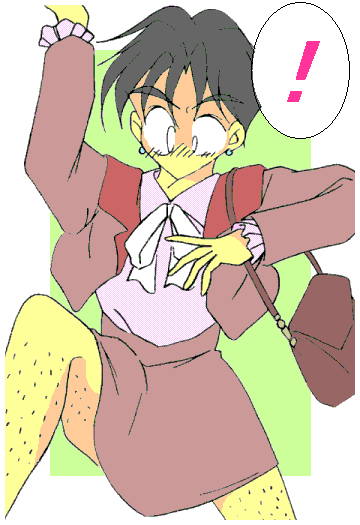

戻る
月曜日に、新しい勤務地である本郷支社へと転勤。
その夜の歓迎会で、勢いから家訓で禁じられた酒を呑んでしまい、酔うと女性に変身してしまうことが判明——
しかも、心までが女に……それもどちらかと言うと色ボケ気味に変わってしまう。
さらには好色の「お得意様」に気に入られて、専門の接待要員に任命（笑）されてしまう。
つまるところ、「仕事」で酒を呑み、女性に変身しなければならない……
……といった、まさに人生観の変わりかねない一週間の激務を終えて、土曜日。
酒井真澄は都内の実家へ戻っていた。
「父さん、何であの『酔うと女になる』体質を教えてくれなかったんだ？」
居間に上がると、酒井はスーツ姿のままいきなり怒鳴り声を上げた。
「オレはちゃんと言っておいたはずだぞ、『酒呑むな』って。……それさえ守ってりゃ、女になんざならずにすんだはずだ」
酒井をそのまま老けさせたような初老の男が面倒くさそうに答えた。休日の自宅と言うことでラフな格好、しかも寝転んだままでだ。
「それにしたって、いくらなんでも——」
「で、今更そんなこと言いにわざわざ帰ってきたのか？ それより真澄、チャンネル替えてくれ。１０番だ」
「父さんの方がリモコンに近いじゃないか……じゃなくてっ！！」
「教えたからって、素直にきけるか？ 『酒呑んだら女に変身する』なんて、身をもってでないと信じられるわけないだろが」
酒井の父親、酒井和水（かずみ）はずぼらで横着な人物であった。
父と息子、かなり険悪になりかけたところを救ったのは、やはり母親だった。
「はいはい、まずはご飯にしましょ。二人ともこれでも呑んで落ち着いて」
そう言って透明な液体の入ったグラスを差し出す。熱くなっていた二人は何も考えずにそれを受け取り、そしてにらみ合ったまま口をつけ……
「……ぐぇほげほげほげほ——っ！！」
激しくむせた。
「か……母さん、これ——」「酒じゃないか！？」
「まずは実際にご対面。楽しみだわぁ、真澄がどんな女の子になるのか。……父さんのも久しぶりだし」
ボンッ！
二人の足元から、「浦島太郎が玉手箱を開けたとき」を連想させる煙が上がった。
次の瞬間、息子である真澄はスーツ姿のビジネスマンスタイルから、ピンクのセーターとロングスカートの巨乳娘に姿が変わった。
髪型は二つの房を後ろにたらす、ツーサイドアップ。
そして父の和水は留袖姿の熟女に変身する。やはり胸の大きな美女だ。
「男同士でケンカになるなら、みんな女になればいいのよ。男は人付き合いヘタだけど、女は上手いから」
さらっと言う母親に毒気を抜かれた二人は、そのまま畳にへたりこむのであった。
とらぶる☆すぴりっつ
二杯目「呑まれたら外国人？」
作：城弾
「あらあら間違いなく血筋だわ。よく似た母娘になったじゃない」
産んだほうの女親の、のん気な一言。
「もう、ひどいじゃなぁいママッたら。あたし、お酒はニガテなのっ」
真澄の口調は、すっかり甘えた娘になりきっていた。
「ガマンしなさい真澄。そういう呪いなんだから」
女性化した途端に、文字通り「襟を正す」和水。
寝転んだ体勢から瞬時に起き上がって正座する。一部の隙もない姿勢になって、「妻」を見上げると、
「それより母さん、さっきから気になってたんだけど、もう煮物出すの？」
「ええ、そろそろいいわよ」
「ダメ！ まだ全然煮えが足りないわよ。ああもう……なんだって貴女はこう大雑把なのよ」
言うなり和水は立ち上がると、台所へと走り、そしててきぱきと料理を始める。
「信じられないわ……パパッたら、普段は縦の物を横にするのも面倒くさがるのに」
「久しぶりに見たわね。普段はテレビのチャンネル変えるのも人任せなのに、女になると途端にああやって細かくなるのよ」
懐かしそうにつぶやく母、悦子。
「あ……あの、ママ？」
真澄は閥が悪そうに切り出した。いわば娘として初対面である。
「初めてよね真澄、あなたのその姿。……可愛いじゃない。お父さんと同じで自動的にお化粧もされるのね」
「うん。実はこの体質で色々尋ねたかったんだけど……あのパパを見たら、なんだかどうでもよくなっちゃって——」
なにやらうずうずしている。
「真澄もする？ お台所」
「うん」
「やっぱり女の子ねぇ。それにこうしてしまえば、みんな女性向けの味付けでいいし」
母親にはそういう狙いもあったようだ。したたかな人である。
そして夕食。
既に酔ってしまったせいか、酒に対して抵抗がなくなり、この際だからと親子三人潰れるまで呑んで、そして話した。
だが、それまでほとんど呑んだことがない上に、女になって肝臓が小さくなりアルコール処理の弱くなった真澄は、結局悪酔いして、着ていた服を汚す羽目に——
翌朝。
「うう……頭痛い……」
真澄は痛む頭を抑えつつ、目を覚ました。
意識をはっきりさせるために顔を洗うべく洗面所に向かう。
「…………」
顔を洗って鏡を見て……真澄は自分がネグリジェを着せられていることに驚愕した。
「こ、これ……姉ちゃんのじゃ？」
「ええ、さくらのよ」
二つ年上の姉、さくらはいまだ独身で家族と同居の身。
この土日は女友達と旅行中である。
「やっぱり姉妹だけによく似てるわね。お化粧落とすとなおさらだわ」
「ううー、ネグリジェなんて……恥ずかしい……」
既に心だけ男に戻っている真澄。
「なんだ真澄、まだ寝巻き姿で呑んだことないのか？」
男物のパジャマに着替えていた和水が、起きてきてそう問いかけた。
「酒は出来るだけ呑まないようにしてたんだよ……女になったら男では考えられないほどエロくなるし」
「そうだろうな……オレも若いころは、何度か朝起きたら隣に男がいたことあったし」
「……！！」
朝っぱらからいきなりのカミングアウト。
もっとも母親は承知の上らしく、驚いた様子はない。しかし、そんな「実例」を聞かされた真澄自身はたまらない。
（ほ……本当にそこまで突っ走るんだ……絶対に呑まないようにしないと——）
「さぁさぁ朝ごはんにしましょう。真澄、今日もお休みでしょ？ 夜になったらさくらも帰ってくるし、久しぶりに家族四人揃ってお夕飯ね」
「それまでに、元に戻れるかなぁ」
ずきずきとする頭が、酔いの深さを物語る。
「なに言ってんのよ。家族で何を恥ずかしがってんの？」
「母さんがあんなふうに飲ませなきゃ……」
「だって、ああでもしないと、きっとお互い言いたいことも伝えられなかったわよ」
確かに実際に父親の変身を見て血筋を理解したし、自分の変身で状況を伝えられたようだ。
それを見越した母の深謀遠慮だというのなら、見事としか言いようがない。
「母さんも結構呑んでいたのに、平気なんだね」
「新潟の出よ」
酒どころである。ちなみに前夜、父と子に飲ませたのも新潟産の酒だ。……安物ではあるが。
朝食を採り、くつろぐ父と息子……いや、肉体的には「母と娘」と言うべきか。
洗濯機のまわる音がかすかに聞こえる、そんな普通の日曜日。
何の気なしにテレビを見ていたら、真澄の携帯が音をたてた。「……はい、もしもし」
『酒井君？ あ、もしかして女の子になってるの？』
「あ……吉野さん？ はあ、ちょっと実家で呑んじゃって——」
電話の相手は真澄の同僚、吉野桜子。有能な美人ＯＬだが、ヤオイ趣味＋のんべなのが困った人である。
『それでもいいわ。急な仕事が入ったの。明日代休取れるから、今から来てくれない？ みんないるけど手が足りないのよ』
「え？ でも、今の俺……」
『ご隠居の相手しているときは、いつもその姿でしょ。構わないから早く来て』
相当に切羽詰っているらしい。思わず了承の返事をしてしまう。
「仕方ないな……」
真澄はネグリジェを脱ぎ捨てた。ショーツ一枚だけの姿。もちろん胸は何もつけていない。
「母さん、会社に行かないといけなくなった」
「あらあら困ったわね。今洗濯しているのよ、あなたの服」
（そういえば夕べ、悪酔いして服を汚したっけ……）
「いいよ、何か適当に借りるから」
父親の服を借りようとしたが、ズボンは極端に尻が大きく不恰好になってしまう。ワイシャツに至っては胸囲が男性のときより小さくなっているにもかかわらず、極端に前に出ているため、やはり形が整わない。
「真澄、とりあえずさくらの服を借りなさい」
「ううっ、それしかないか……」
家系なのか、姉も胸が大きい。そのため、まるで真澄本人にあつらえたように、姉のスーツがぴったりとフィットする。
「あとは……と、あったあった」
洗濯しているのでポケットの中身はすべて出してあった。財布も定期もタンスの上だ。
「それじゃ、後はこれ飲んで」
「え？」
母親の差し出すコップに、前夜の記憶が蘇える。一応においを嗅ぐとかすかに酒とわかるにおいが。
「母さん、俺、これから仕事に行くんだよ……」
そう言うと、真澄は玄関へと急いだ。しかし履いてきた靴がぶかぶかでサイズが合わないため、これまた姉の靴を借りる羽目になる。
「ちょっと真澄——」
おろおろして、女姿の「夫」に視線を向ける母。
「放っておけ。一度痛い目を見れば理解できるだろう。……そもそも靴が変化してない時点で気がつかない辺りが間抜けだ」
いつもの通勤経路ではないため駅で切符を買う。路線図を見て、会社までの最短ルートを探す真澄。
電車に乗ったら、今度は仕事のことで頭が一杯になる。程なくして、真澄は職場の最寄り駅に着いた。ここからなら徒歩で行ける。
だが、ここでタクシーを使って会社に向かっていれば、以後の悲喜劇は起こらなかったかもしれない。
もう少しで会社というところで、真澄の足元からあの煙が吹き上がった。

（えっ！？ 今日は酒呑んでないのに？ ……あっ！）
否、それは呪いが「解除」される時の煙だった。つまり、真澄はすっかり酔いが醒めたのだ。
パンストを履いてなかったため、スカートから覗く脚をすね毛がびっしりと覆う。
前がきつかった胸元は、今度は横幅がきつくなる。そして頬をくすぐっていた髪が一気に短くなった。
その頬をなでると、無精ひげが生えている……
「わ……ひいぃっ！」
要するに、男に戻ってしまったのだ。衣類だけ女物のままで。
不幸中の幸いは化粧をしてなかったことか。この状態でだと、かなり困った顔になっていただろう。
とはいうものの、
「わ……わわわっ」
今の自分の姿を誰にも見られまいと、酒井は真っ赤になって、慌てて近くの公園に駆け込んだ。
取り敢えず植え込みに飛び込んで身を隠す。会社まではあと５００メートル——
「な、なんで？ いつもは服も一緒に変わってしまうはずなのに……あ、そうか！ この服は飲んだときには着てた服じゃなく、起きてから着替えた姉ちゃんの服だった……」
だから酒井が元に戻っても、この服は「もとの女物」のままなのだ。
履いてきた靴が、飲んだときには脱いでいたため変化してなかったことに気がつけば、この「女装状態」を回避できたかもしれないが……
ちょうどその頃、実家では酒井の着ていた服が元のスーツに戻っていた。
「あらあら、あの子ったら酔いが醒めたみたいね……」
「どこで男に戻ったかが問題だがな……まぁ今なら携帯で助けを呼べるか。オレの時なんざ、そんなものないから近くを探してだな——」
酒井は女装したまま植え込みの中に隠れていた。幸い公園といえどそんなに人目がない。
息を潜めていたら携帯が鳴った。慌てて出ると、桜子からだった。
『ちょっと酒井君っ、いつになったら会社に来るのっ？』
口調がちょっとキツい。もしかして半ギレてる……？
「いや……それどころじゃなくて——」
『男の声ね……はっはーん……』
勘がいい……むしろ状況を楽しむような口調に変わった。どうやら事態を把握したようだ。
「と、とにかく助けを……」
『わかったわ。で、場所はどこ？』
「え、えっと——」
公園に隠れていることを伝えて通話を切り、ほっとしていたところで酒井はいきなり声をかけられた。
「……お探し物ですか？」
びっくりして振り向くと、植え込みの中に「先客」がいた。リード（犬の紐）を手にした若い青年だ。どうやら飼い犬と散歩中らしい。
「わたしもメガネを落としてしまって、探しているんですよ。……見ませんでした？」
「あ、あの……」
この青年は目が悪いらしい。女物のスーツを着ている酒井が、その裸眼でどう見えているのだろう？
「ああ、名乗りもしないで失礼。僕は諸星といいます。お嬢さんも探し物ですか？」
どうやら服の印象で女に思われたらしい。元々酒井は女顔だ。
「えと、その……」
言いよどむ。それはそうだ。
「うーむ、しかし裸眼でメガネを探してもらちがあかないな。……仕方ない。頼んだぞ、アギラ、ミクラス、ウインダムっ」
青年は連れていた三匹の犬のリードを外した。
やがてその中の一匹が、派手な赤いメガネを口にくわえて戻ってきた。
「ああよかった、壊れていないらしい。それでは……でゅわッ」
メガネを思い切り前方に突き出して、目にかける。視界がはっきりして見えたのは女装の男。
青年の思考はフリーズした。
「ど、どうも……」
「はっじめましてぇ」
声は上からした。
「吉野さん！？」
顔を上げると、そこには吉野桜子がいた。
そしていきなり「カメラ小僧」が持ち歩いてそうな大きなカメラで酒井たちを撮影する。フラッシュフラッシュフラッシュ。肖像権完全無視。
「わわっ！ 何するんですか！？」
「こんなおいしい場面を撮らないなんて女が廃るわよ。もうっ、酒井君てばなんてわたし好みのことをしてくれるのかしら〜っ。欲を言えばちゃんとお化粧してカツラもほしかったけどっ」
「は……早く助けてくださいよっ」
泣きそうな顔で懇願する酒井。
「仕方ないわね、ほらっ」
桜子はすかさずカップ酒を差し出した。
「ううっ、やはりこれか……」
酒井は観念して、それをぐいっとあおった。酔いが回った途端、再び煙とともに女姿へと変わる。
今度は着用してから飲んだので服も変化し、真澄の身体に完全にフィットする。
「助けてあげたんだから、今日一日私のことは『お姉さま』と呼ぶように」
「は、はい……お姉さま」
犬よりも力関係が厳しかった。
「それではごめんあそばせ〜」
唖然とするメガネ青年をおいて、桜子は酔った真澄を引きずって去っていった。
残された青年は、ぽつんとつぶやいた。
「うーん、やはり東京は凄いところだ。僕には向かないようだ……神戸で羊の世話をして暮らそうか」
オフィスに着くともう一杯。これで服装が制服に変化する。さらに、気持ちも「真面目で勤勉なＯＬ」になってしまう。
「見慣れたはずだが便利なものだと思うよ」
上司の二村課長がそうつぶやいた。噂では、服に着られて女の子になってしまう息子がいるそうだ。
「申し訳ありません。早速仕事に入ります」
酔っているのに、何故かきりっとなる真澄。
確かに肉体的には酔っているのだが、泥酔しているというわけではない。
初めての時は分量を間違えた上に、居酒屋だったから思い切り弾けた酔っ払いぶりだったが、オフィスではさすがにそれはまずいだろう。
ただし、酔いがさめると「女装」を意識してしまい、仕事にならなくなる。そのため、また適量を飲ませて「ほろ酔い」にしておかないといけない。
もっともいつもなら飲ませたがる桜子が今回はおとなしい。……真澄が「女装状態」になるのを狙っているのはみえみえだった。
三時が過ぎて、どうやら五時くらいには引き上げられそうな目処が立つ。
みんなでお茶だ。真澄も調整と一服でコーヒーにする。
ちなみに普段はブラックだが、女性化した時はシュガースティック二本と、ミルクをいれて飲む。着替えがないため女性でいないといけないが、肉体だけなっていればそれでいい。
だから変身が解けるまでは、酒を呑みたくなかった。
「課長、お客様です」
そこへ髪の毛をひっ詰めた若いＯＬが来客を告げに来た。どうやら真澄たちと同様に、休日出勤を余儀なくされたらしい。
「ご苦労さん、恵里衣くん」
「ところで課長、かすかにアルコールのにおいがします。もし飲酒しての仕事なら、それは業務にさしつかえる確率が８５％で——」
「恵里衣くん、お客様と言うのは？」
「そうでした。どうぞ」
彼女は抑揚のない口調で機械的に挨拶し、来客を通す。真澄の目が点になった。
「父さん？ 母さん？」
既に元に戻った父親、和水と、母の悦子がオフィスに入ってきたのだ。
「皆さん、真澄がお世話になってます」
悦子が深々とお辞儀する。しかし皆の視線は、隣に立つ父親の方を向いていた。
（この人が……）
（……酒井さんのお父さんなんだ）
同僚のＯＬ、宇良かすみと澤野いずみはひそひそとナイショ話を始めた。
男たちもそれを咎めない。気になるのは同じだからだ。
（この人も、酒井みたいに変身を？）
どうやらその疑問をぶつけられるのを察していたのか、和水はやや引き気味に会釈する。
「これはこれはご丁寧に。ご子息は大変よくやってくれていますよ」
課長の言葉は社交辞令ではない。実際に酒井真澄は有能な社員だった。……彼のために桜子が暴走するのに目を瞑ればの話だが。
「二人とも何しに？」
「バカもん、お前のために着替えを持ってきてやったんだ。ほれ、靴もだ」
手渡されたのは、実家においてきた自分の服一式と靴。
「あ、そうか。それじゃ……課長、ちょっと着替えていいですか？ 姉の服を借りているから、これを持って帰ってもらいたいんで」
「ああ。どうせ休憩中だし、女子更衣室使っていいから」
「お待たせしました」
その姿は、アキバ系でないはずの彼らにも『萌え』という単語を脳裏によぎらせた。
まだ女性の姿のため着ていた服がぶかぶかなのだ。それが逆に女性の肉体の華奢なところを強調する。
「それじゃ酒井君、ぐいっとあおってみよう」
冷蔵庫から安酒を取り出す桜子。
「いいですよ、もう。ちゃんと男の服が戻ってきたし、このまま元に戻るたけだし」
「でも酒井君、靴が合わないわよね？」
「う……」
酒井自身の靴は２６センチ。女性化すると２３センチ。
「ほらほらぐいっとやりなさい。あたしも付き合ったげるから」
「いや……でも……もうちょっと待てば——」
「なによ？ 『お姉さま』のいうことが聞けないって言うの？」
「おい真澄、職場で飲むのか？」
「いや、これには事情がありまして」
いぶかる父親に、課長が説明をした。
「ふむ、それも業務の一環なら仕方ありませんな。ならむしろ好都合。真澄、お前が知りたかったその体質にはまだ続きがあるんだ」
「え？ 酔うと女になる、そして場所にあった服装に変わる、だけじゃないのか？」
「それはただ酔った場合の話だ。混じり物のない『地酒』とかを飲むと影響力が段違いだ」
そう言えば経費ってことで安物しか飲ませてないわね……桜子はそう思った。
「論より証拠だ。どうせ呑むというならこれを呑んでみろ」
差し出されたのは、ドイツ産のビール。
「外国の酒がどうしたって？」「いいから飲んでみろ。半分で充分だろう」
服をフィットさせる都合もある。仕方ないので缶を開けて半分をゆっくり呑んでいく。
酒に強くない真澄はそれで充分に酔えた。
ぼんっ！！
そこに現れたのはＯＬ服に身を包んだ真澄……ではなかった。
髪をオールバックにして軍帽を被り、そしてサスペンダー式のズボンをはいていた。上半身には軍服を羽織っていて、下着もシャツもつけていない。豊満な胸の先端をサスペンダーが隠しているという、映画会社に怒られそうな衣装だった。
「さ……酒井君？」
さすがにこれは予想外だった。桜子が、恐る恐る尋ねる。
目の据わった真澄はそれには答えず、右手を高々とかざして……叫んだ。
「ドイツの酒はァァァァァ、日本一ィィィィィィ」
「…………」
絶句する一同。
「……と、まぁ、世界の酒を呑むとその国のイメージに引き摺られてなぁ」
父親の和水がぼやくように説明する。
「どうでもいいけど酒井、それ日本語おかしくないか？」
先輩の男性社員。越野が指摘する。
「まぁやっぱり酔っ払いってことだな」
これも先輩の竹葉（ちくは）が言う。
「なんだ貴様ら！ わたしに逆らうとはいい度胸だ。軍法会議にかけてやるぞ」
「なりきってる……」
年のそれほど違わない菊水がつぶやく。
「多少は本人の持っているイメージも関係あるらしいんですよ」
さすがに他人の前なので、口調を改めている和水。
「酒井ってミリオタ？」
「っていうか、むしろドイツのイメージを間違えているというか……」
口々に評している。
その間、当の本人はサスペンダーが一センチずれると大変恥ずかしい状態のまま黙ってたたずんでいた。
どうやらいきなりハイテンションになったのはいいが、酔いがきつくなってきたらしい。
「面白いわね。じゃ次は……」
「待って、今はまだダメ」
舌なめずりをして次の酒を呑ませようとする桜子を、悦子が止めた。
「どうしてですか？ お母さま」
「まだ心が女みたい。その状態で飲ませても前のが残っていて、お酒同士でケンカするのよ。そうなるとこういう特徴が出なくなるの」
「なるほど。今までは安いものばかり飲ませていた……つまり純度が低かったからこういう特徴は出なかったんですね」
待つこと数分。
「酒井君、大丈夫？」
胸を押さえて蹲っている真澄に、桜子は上から尋ねた。真澄は真っ赤な顔をしたまま、上目遣いで見上げた。
「大丈夫じゃないですよ……何でこんなきわどい服に……」
「あ。心は男に戻ったみたいね。じゃあこれいってみよう」
本当に僅かな量の液体を差し出す。
逃げられそうにないし、とりあえず酔えば別の服になるだろうし、女になりきってしまえば女性服を着ている羞恥心も消えるだろう。
そう思ってその液体を飲んだ。「……苦っ」
ぼんっ！！
長い髪は二つに分けられて編みこまれ、それがぐるぐると「お団子」になる。
化粧もアイシャドウの赤が目立つ。そしてプロポーションをくっきりと際立たせたチャイナドレス。
深いスリットから、まぶしい太ももがちらちらと見える。
「あいや〜ぁっ、わたしまた酔ってしまたアルよ〜」
「…………」
「……なるほど、紹興酒だからこうなるわけね」
扇で顔をあおぎながら、おかしな言葉遣いで悲鳴？を上げる真澄。
ちなみに紹興酒とは、中国のお酒である。お燗して氷砂糖を入れて……という呑み方もあるが、この場合は常温であった。
「うーん、しかし語尾に『アルよ〜』ってのは……最近のアニメだとまず変更されるからな」
「何の話だ？ 菊水」
「……いえ、なんでもないです、課長」
数分後、チャイナドレスのままがっくりと膝をつき、真澄は打ちひしがれていた。
「ああ……なんてべたな口調の中国娘を……」
そっちかい！
「ハイハイ呑んで忘れましょうね〜。次はこれ」
これまた常温が適温である、スコッチウイスキーを無理矢理呑まされて……
ぼんっ！！
煙が晴れると、真澄は一心不乱にオフィスを掃除していた。
長い髪は纏め上げられていた。黒いワンピースに白いエプロン。
「うん、やはりメイドさんはイギリスタイプに限るわね。アメリカンタイプはどうもねえ〜」
桜子は、何故かメイドさんに詳しかった。
「桜子お嬢様、床掃除は終わりました。次はいかがいたしましょう？」
「そうねえ……」
従順なメイドさんと化した真澄を値踏みするように見る桜子。そして悪戯するような表情になると、「よし、跪いて私の靴をお舐め！」
「仰せのままに」
「いかん、さすがにとめよう」
本当に跪いて桜子の靴に顔を近寄せる真澄。だが、課長の命令で桜子から引き離されるのであった。
さらに数分後、真澄はメイドさんスタイルのまま壁に向かって体育座りしていた。その身体からどす黒いオーラが滲み出ている。
「いいわねぇ。今度帰ってきたらウチでもスコッチ飲ませて家事手伝わせようかしら」
あっけらかんと言い放つ母、悦子。人事ではない父、和水は苦い表情で黙ったままだ。
「まったく……少年少女文庫向けだったからそれですんだが、１８禁ＯＫのところだったら何をさせるつもりだったんだ」
「そりゃ当然ズボンのチャックを——」
「やめてください！！ ああ。自己嫌悪で消えてしまいたくなってきた……」
「はは。じゃ最後にしましょうか。ちょっときついから水割りにする？」
散々おもちゃにして満足したのか、桜子の打ち止めを宣言。
これが最後ということで、バーボンを飲んだら……
ぼんっ！！
「ハローエブリバァディッ！ トッナリのスクエァ〜にバッリケードがデキたってネ〜ッＨＡＨＡＨＡ〜ッ！！」
「…………」
結果、テキサスのカウガールになってしまった真澄。やたら陽気に、それもおかしな日本語でアメリカンジョーク（違）を喋る喋る。
「まあよかった。これならうるさいだけだ。万が一ロデオとか言いだしてバイクを馬の代わりに乗り回しだしたら飲酒運転だしな」
「そうですね。時節柄、酔払い運転はいつも以上にまずいでしょうし」
立て続けに違う変身をさせられた真澄は、くたびれて眠ってしまった。
「まぁ五時まで仕事していた扱いにしてやろう。……その分は吉野君の給料から差っ引きたいところだが」
「えーッ？ でもこれでやっちゃいけないことがわかったじゃないですか。ご隠居の前にメイドで出したらロストバージンくらいはありえますよ。その危険を見抜けただけいいじゃないですか」
「まぁいい。えー……」
両親の前で息子——もとい娘をおもちゃにしてしまって、さすがに言葉のない課長。
「いいですよ。とにかく痛い目を見れば、これも自分がどれだけ因果な体質かわかるってもんです」
「でも酔った勢いで他所の娘さんを妊娠させたりはしないでいいわよ」
「妊娠させられるかもしれないだろうが」
「十月十日も酔っ払えるわけないでしょ」
それが理由で、酒井家の先祖には過去に一生を女で過ごした者はいない。
老夫婦は息子——もとい娘の同僚たちに向かって、改めて挨拶をする。
「なにかとご迷惑をかけると思いますが、ウチの『娘』をよろしくお願いします」
「確かに『娘さん』はお預かりいたします。どうかご安心ください」
両親と同僚に「娘」扱いされているとも知らずに、真澄は酔いつぶれて眠っていた。
翌朝。代休日。
「あ〜昨日はひどい目にあった……チャンポンしたけど、でも元に戻れてよかった……」
立て続けの変身で疲弊しての眠りだったものの、酔いそのものは軽く、酒井は朝には男に戻ることができた。
新聞を広げ、トーストをかじりながらコーヒーをすする。
「タバコ増税で値上げ——か……酒も２００％くらい税金かけてくんないかな……」
世界の酒好きをすべて敵に回しかねない発言であった。それほどまでにもう呑みたくはなかった。
ぴんぽーん。
チャイムが鳴ったので、インターホンで確かめると桜子だった。「とりあえず上がっちゃってください」と扉を開ける。
桜子は何故かリュックサックを背負っていた。
「なんです？ この荷物……」
と言いつつ、酒井の脳裏に、猛烈に嫌な予感が走る。
「うん、昨日の続き。安心して、ちゃんとつまみもあるから。ウォッカでしょ、ジンでしょ、テキーラでしょ——」
桜子はにっこり（にんまり）と笑顔を浮かべると、リュックから色とりどりの酒瓶を取り出し、並べ始める。
酒井は思わず脳内で叫んだ。
「酒税３００％希望！」
……と。
あとがき
「呑んだ酒の作られた場所によってタイプの違う女性に変わる」
前回に書いていた「描かれていない設定」はこれのことです。
そしてこれが「着せ替え少年」の姉妹作たる所以で。
日本酒でも影響受けますが、これは元々日本人でそこまで細かくはならないと言うことで。
いや。道産子の特長とか博多っ娘のとか言われてもわからないのが正直なところで（笑）。
今作はシリーズ化を頭に入れていましたので二話目で説明を。
続いたので区別のためサブタイトルを。
最初は「法則」と言うタイトルでしたが「解明」に変えました。
だから一話目は「変身」だな（笑）
次は「彷徨」か「熾烈」か（笑）
若干無理やりなゲスト様。
メガネの青年。諸星さん。もちろん現役時代のイメージで（笑）。
そしてアンドロイド少女（ゼロワンじゃないです・笑）も。
お読みいただきありがとうございました。
戻る
□ 感想はこちらに □